Netify Workshop
Cassy Dorff and Shahryar Minhas
2024-06-12
workshop_demo.RmdPackage Overview
This vignette provides a high level overview of our package from start to finish. The best use of this vignette is to introduce the main components of the package to larger audiences. This overview covers our primary functions with data examples and minimal writing.
netify goals:
- Create: Netify your data! We Make it easy for users to create networks from raw data in \(R\) as well as add additional features, such as nodal and dyadic variables, to the network object.
- Explore: Explore characteristics of the network you created, like summary statistics at both the network and actor levels. Visualize your network.
- Advance: Advance your network analysis to the next stage by preparing it for use in other network packages and modeling approaches.
netify provides a suite of primary functions to help
achieve these goals:
| Createüí° | Explore üîé | Advance Ô∏èüöÄ |
|---|---|---|
netify() |
peek() |
prep_for_amen() |
add_nodal() |
summary_actor() |
prep_for_igraph() |
add_dyad() |
summary() |
prep_for_statnet() |
subset_netlet() |
plot_actor_stats() |
|
plot_graph_stats() |
||
plot() |
netify can take dyadic data or edgelists to get
started.
-
The package can also create different types of networks including:
- cross sectional networks
- longitudinal (with static and varying actor composition)
- bipartite networks
- multilayer
-
As well as create networks with different edge types:
- weighted
- binary
- symmetric or non-symmetric
Step 1: Create üí°
Begin by loading packages and supplying the data. We will use the
peacesciencer package to grab some familiar data.
# load packages
library(netify)
# install extra packages for this vignette
if(!'tidyverse' %in% rownames(installed.packages())){
install.packages('tidyverse', repos='https://cloud.r-project.org') }
if(!'peacesciencer' %in% rownames(installed.packages())){
install.packages('peacesciencer', repos='https://cloud.r-project.org') }
# load necessary packages for this vignette
library(peacesciencer)
library(tidyverse)
# organize external data for peacesciencer
peacesciencer::download_extdata()
# create dyadic data set over time using peacesciencer
cow_dyads <- create_dyadyears(
subset_years = c(1995:2014)
) |>
# add mids
add_cow_mids() |>
# add capital distance
add_capital_distance() |>
# add democracy
add_democracy() |>
# add gdp
add_sdp_gdp()Next, create a netlet object from the above COW data
frame using our package’s core function netify. There are a
number of useful parameters, but the most important ones to highlight
are:
-
dyad_datais a dyadic data.frame that should have at least the following variables used to specify actors:-
actor1: character indicating actor 1 variable in the data -
actor2: character indicating actor 2 variable in the data
-
netify_typeis a type of netlet object (cross-sec,longit_list, orlongit_array).
mid_long_network <- netify(
cow_dyads,
actor1='ccode1', actor2='ccode2', time='year',
weight='cowmidonset',
actor_time_uniform=FALSE,
sum_dyads=FALSE, symmetric=TRUE,
diag_to_NA=TRUE, missing_to_zero=TRUE,
nodal_vars = c('v2x_polyarchy1', 'v2x_polyarchy2'),
dyad_vars = c('capdist'),
dyad_vars_symmetric = c(TRUE)
)## ! Warning: Converting `actor1` and/or `actor2` to character vector(s).Congratulations you have created a network object! üéâ
We can also add nodal and dyadic data after we’ve created the network
via the add_nodal() and add_dyad()
functions.
Let’s assume that we had information about each actor in the network that we’d like to add as a nodal variable after we already made the network object. This could be from our original data set or elsewhere. For example, lets add a logged variable measuring gdp for each node in the network over time:
# create a vector of nodal data
node_data <- unique(cow_dyads[,c("ccode1", "year", "wbgdppc2011est2")])
node_data$wbgdppc2011est2_log <- log(node_data$wbgdppc2011est2)
# add nodal variable to netlet object
mid_long_network <- add_nodal(
netlet = mid_long_network,
node_data = node_data,
actor = "ccode1",
time = "year"
)
# create another dyadic var in cow
cow_dyads$log_capdist = log(cow_dyads$capdist + 1)
# now lets add this to the netlet
mid_long_network <- add_dyad(
netlet = mid_long_network,
dyad_data= cow_dyads,
actor1= 'ccode1',
actor2='ccode2',
time='year',
dyad_vars = 'log_capdist',
dyad_vars_symmetric = TRUE
)Step 2: Explore üîé
We made a network, so let’s look at it. First, we might want to take
a peek at the network object to see if the matrix looks the
way we’d expect it to look. This function lets you glance at a specific
slice of the network if it is longitudinal or the entire network if it
is cross-sectional.
## $`2012`
## 2 200 205 210 211 212 220 221 223 225 230
## 2 NA 0 0 0 0 0 0 0 0 0 0
## 200 0 NA 0 0 0 0 0 0 0 0 1
## 205 0 0 NA 0 0 0 0 0 0 0 0
## 210 0 0 0 NA 0 0 0 0 0 0 0
## 211 0 0 0 0 NA 0 0 0 0 0 0
## 212 0 0 0 0 0 NA 0 0 0 0 0
## 220 0 0 0 0 0 0 NA 0 0 0 0
## 221 0 0 0 0 0 0 0 NA 0 0 0
## 223 0 0 0 0 0 0 0 0 NA 0 0
## 225 0 0 0 0 0 0 0 0 0 NA 0
## 230 0 1 0 0 0 0 0 0 0 0 NANext, let’s examine a few basic summary statistics about the network
using oursummary() function.
# create data.frame that provides network-level summary stats
# for each year of the network
mid_long_summary <- summary(mid_long_network)We can also make a quick visualization of network statistics over time using the summary statistics data frame.
plot_graph_stats(mid_long_summary)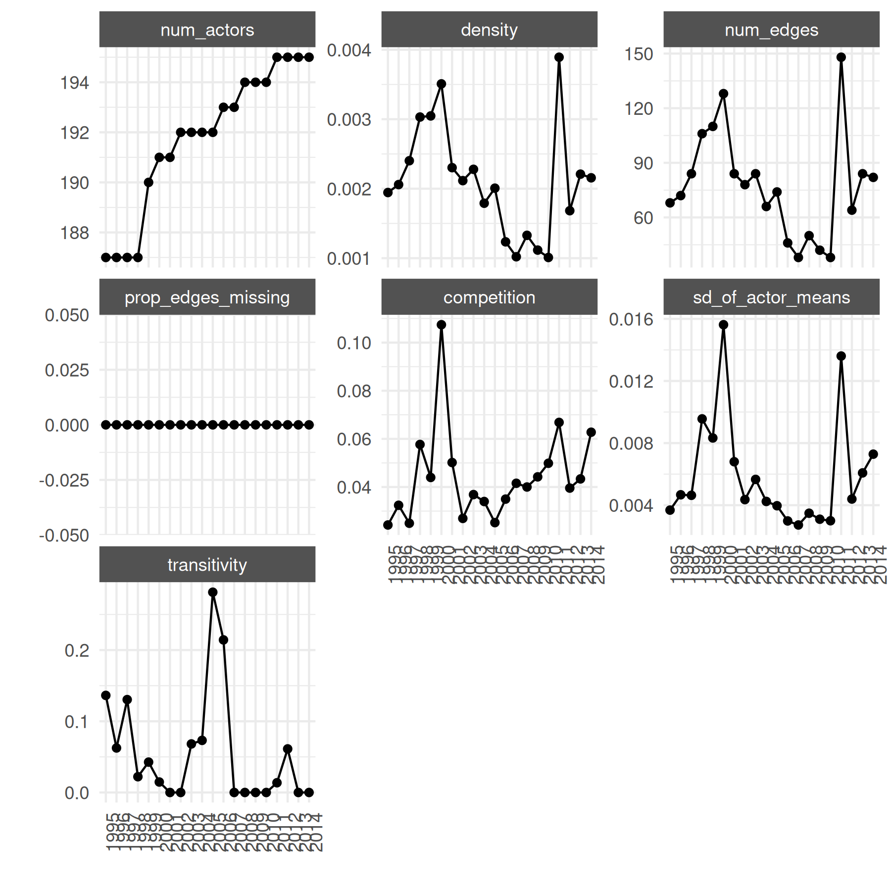
We might also want to look at a summary of actor-level statistics
overtime. Our built-in function, summary_actor will
calculate in-degree, out-degree, average degree, and eigenvector
centrality for each actor in each time period. The
across_actors function allows users to toggle whether they
want a summary of a given statistic across all actors (shown in a
density plot) or for specific actors:
# every year & every actor
summary_actor_mids <- summary_actor(mid_long_network)
head(summary_actor_mids)## actor time degree prop_ties network_share closeness betweenness
## 1 100 1995 1 0.005376344 0.01470588 1 0
## 2 101 1995 1 0.005376344 0.01470588 1 0
## 3 110 1995 0 0.000000000 0.00000000 NaN 0
## 4 115 1995 0 0.000000000 0.00000000 NaN 0
## 5 130 1995 1 0.005376344 0.01470588 1 0
## 6 135 1995 1 0.005376344 0.01470588 1 0
## eigen_vector
## 1 2.013176e-16
## 2 1.798393e-16
## 3 0.000000e+00
## 4 0.000000e+00
## 5 1.122847e-16
## 6 1.207292e-16We can look at the distribution of the statistic for all actors over time:
# density plot across all actors
# for each stat
plot_actor_stats(
summary_actor_mids,
across_actor= TRUE,
)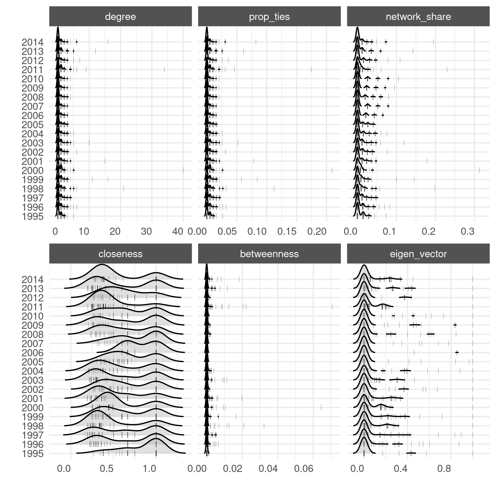
Or we might like to select a specific statistic to focus on across actors over time:
# focus on closeness
plot_actor_stats(
summary_actor_mids,
across_actor = TRUE,
specific_stats='closeness'
)## Picking joint bandwidth of 0.114## Warning: Removed 2913 rows containing non-finite outside the scale range
## (`stat_density_ridges()`).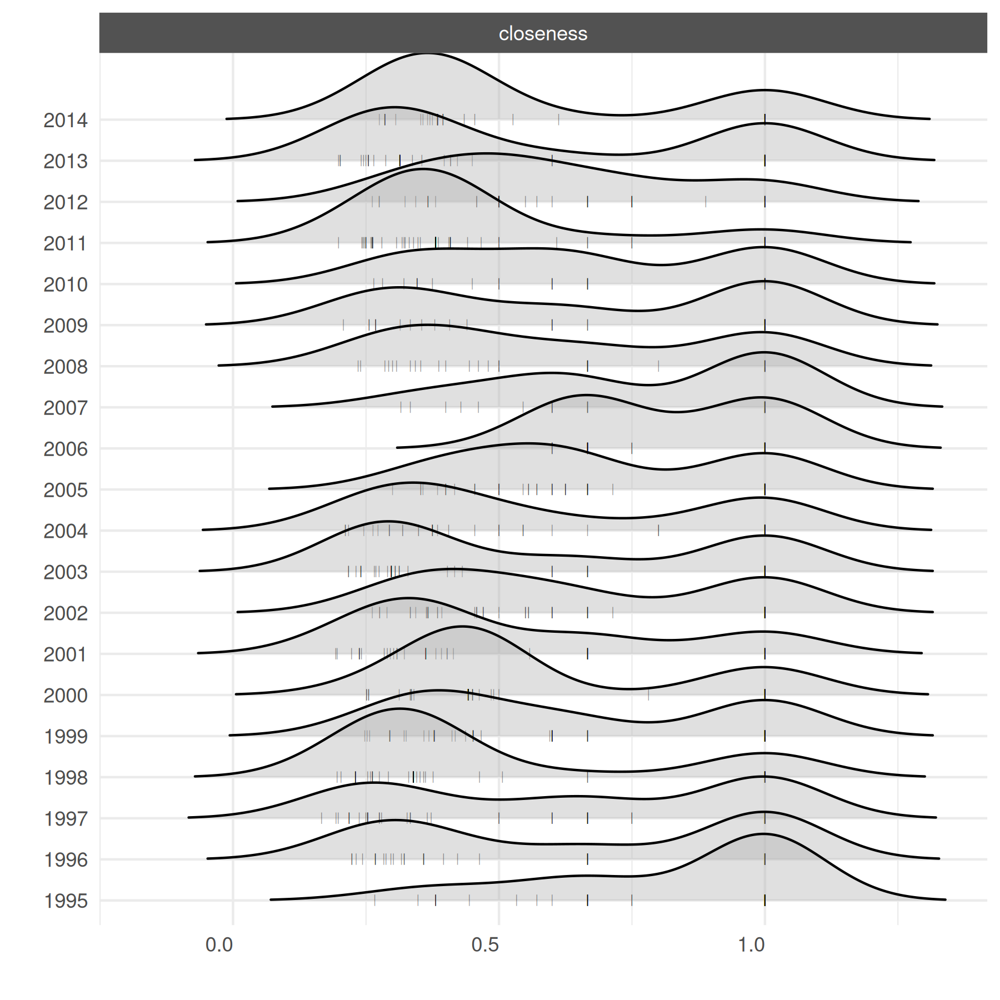
Say that we wanted to showcase actor-specific statistics over time. We can use the plot_actor_stats function for this as well, though it’s highly recommended to subset to a few actors for a more legible plot.
# top 5 GDP countries (USA, China, Japan, Germany, India)
top_5 <- c("2", "710", "740", "255", "750")
#
plot_actor_stats(
summary_actor_mids,
across_actor = FALSE,
specific_actors = top_5
)## Warning: Removed 2913 rows containing missing values or values outside the scale range
## (`geom_point()`).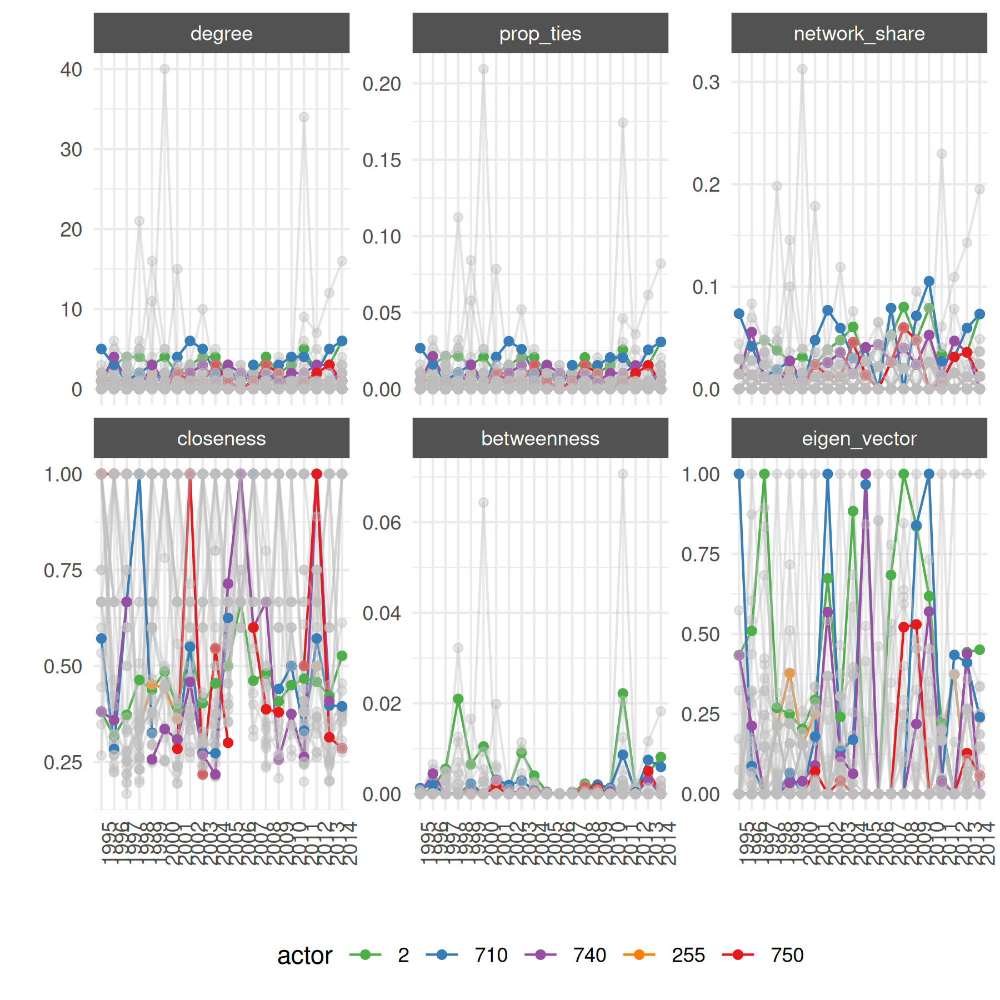
We can also zoom into a specific time slice of the network:
summary_df_static = summary_actor_mids[summary_actor_mids$time == 2011,]
plot_actor_stats(
summary_df_static,
across_actor=FALSE,
specific_actors=top_5
)## ! Note: The `summary_df` provided only has one unique time point, so longitudional will be set to FALSE.## Warning: Removed 123 rows containing missing values or values outside the scale range
## (`position_quasirandom()`).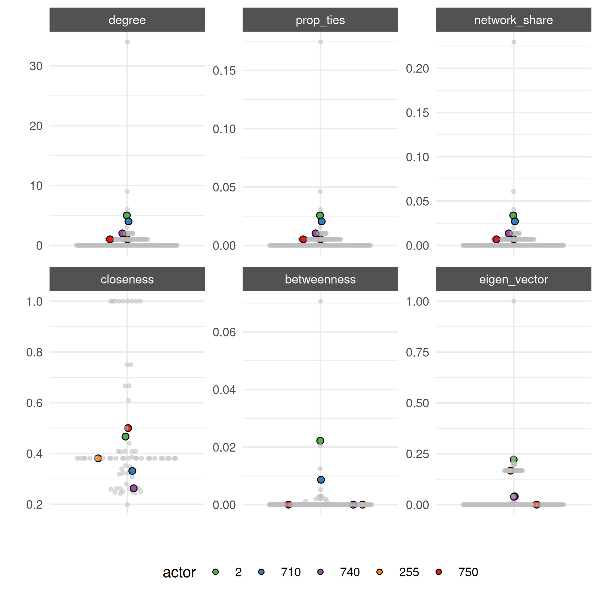
Instead of looking at summary statistics, we also might want to simply visualize the entire network. We can do this by plotting the netify object. (Isolates removed by default and seed set to 6886 for node layout).
Our goal was to make this super easy for plotting time-varying attributes or actors.
# default plot
plot.netify(mid_long_network,
static_actor_positions = TRUE,
remove_isolates = FALSE)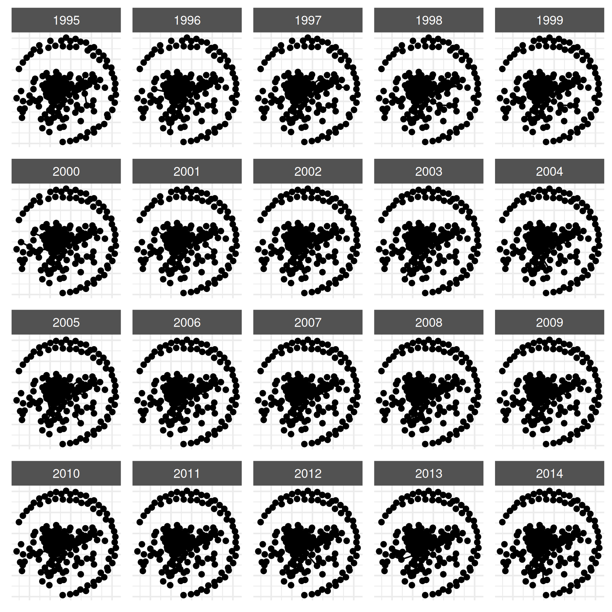
# a little cleaner
plot(
mid_long_network,
edge_color='grey',
node_size=2
)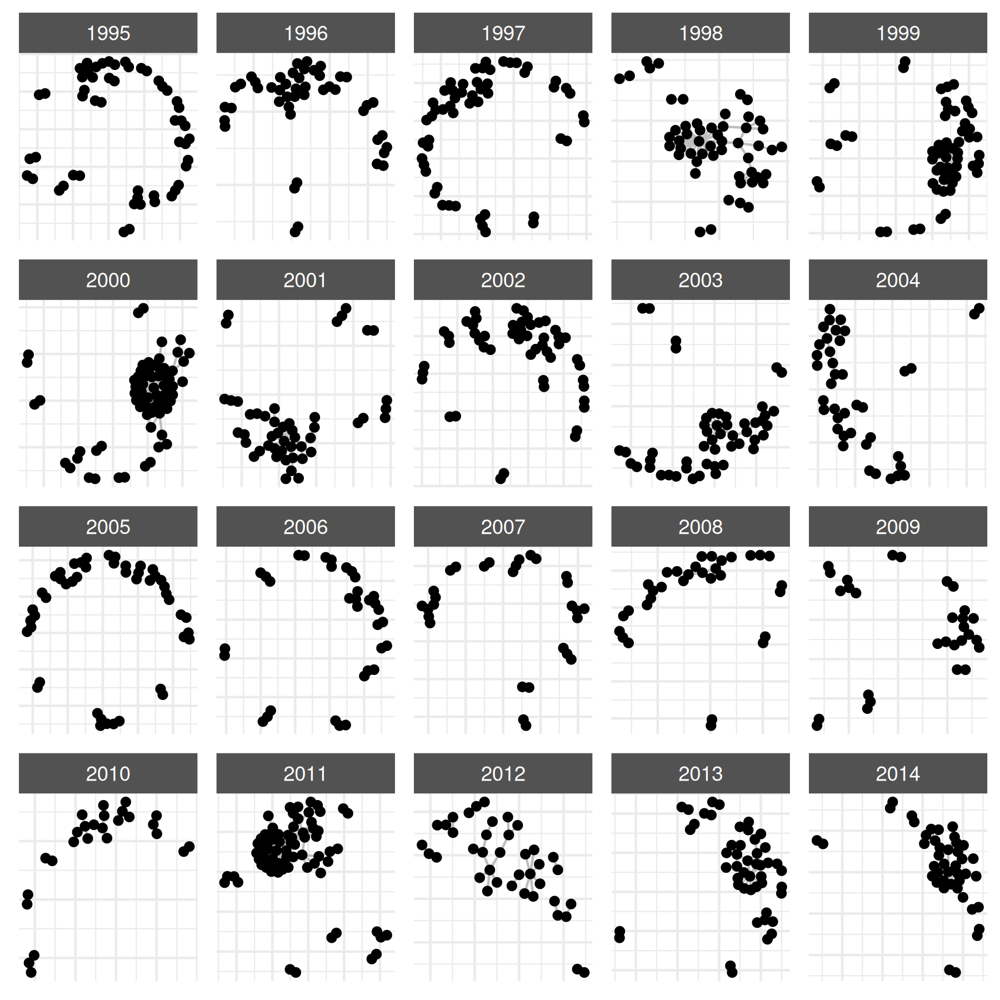
We can also use netify functions to explore actor level
summary statistics in the network graph.
# add actor variables from summary_actor_mids
mid_long_network = add_nodal(
mid_long_network,
summary_actor_mids,
actor='actor', time='time',
node_vars = c('degree', 'prop_ties', 'eigen_vector'),
)We can quickly inspect the object with the print
function.
# print netlet to make sure they got added to nodal features
print(mid_long_network)## ‚úî Hello, you have created network data, yay!
## • Unipartite
## • Symmetric
## • Weights from `cowmidonset`
## • Longitudinal: 20 Periods
## • # Unique Actors: 195
## Network Summary Statistics (averaged across time):
## dens miss trans
## cowmidonset 0.002 0 0.056
## • Nodal Features: v2x_polyarchy1, v2x_polyarchy2, wbgdppc2011est2,
## wbgdppc2011est2_log, degree, prop_ties, eigen_vector
## • Dyad Features: capdist, log_capdistAs well as look at the attributes of the data and specify showing the nodal data information.
## actor time v2x_polyarchy1 v2x_polyarchy2 wbgdppc2011est2 wbgdppc2011est2_log
## 1 100 1995 0.595 0.883 10.740 2.373975
## 2 100 1996 0.574 0.881 10.768 2.376579
## 3 100 1997 0.581 0.868 10.798 2.379361
## 4 100 1998 0.558 0.867 10.833 2.382597
## 5 100 1999 0.553 0.864 10.860 2.385086
## 6 100 2000 0.562 0.863 10.888 2.387661
## degree prop_ties eigen_vector
## 1 1 0.005376344 2.013176e-16
## 2 0 0.000000000 0.000000e+00
## 3 1 0.005376344 1.359804e-17
## 4 0 0.000000000 0.000000e+00
## 5 0 0.000000000 0.000000e+00
## 6 1 0.005263158 4.953675e-03
#i.e.,
head(attributes(mid_long_network)$nodal_data)## actor time v2x_polyarchy1 v2x_polyarchy2 wbgdppc2011est2 wbgdppc2011est2_log
## 1 100 1995 0.595 0.883 10.740 2.373975
## 2 100 1996 0.574 0.881 10.768 2.376579
## 3 100 1997 0.581 0.868 10.798 2.379361
## 4 100 1998 0.558 0.867 10.833 2.382597
## 5 100 1999 0.553 0.864 10.860 2.385086
## 6 100 2000 0.562 0.863 10.888 2.387661
## degree prop_ties eigen_vector
## 1 1 0.005376344 2.013176e-16
## 2 0 0.000000000 0.000000e+00
## 3 1 0.005376344 1.359804e-17
## 4 0 0.000000000 0.000000e+00
## 5 0 0.000000000 0.000000e+00
## 6 1 0.005263158 4.953675e-03And now return to our network graph by highlighting specific nodal attributes:
# vary node size by degree
plot(
mid_long_network,
edge_color='grey',
point_size_var='degree'
)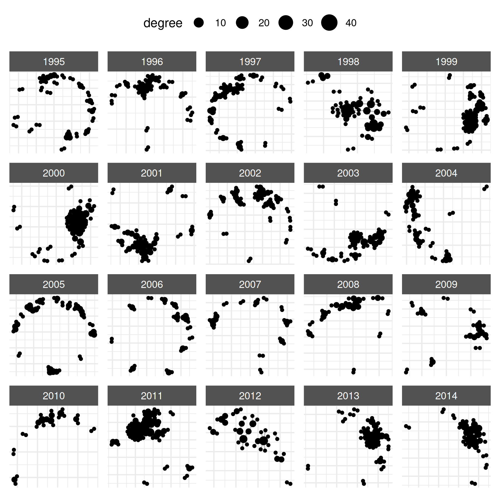
# vary node color by polyarchy
plot(
mid_long_network,
edge_color='grey',
point_size_var='degree',
point_color_var='v2x_polyarchy1'
) +
scale_color_gradient2() +
labs(
size = 'Degree',
color = 'Polyarchy'
)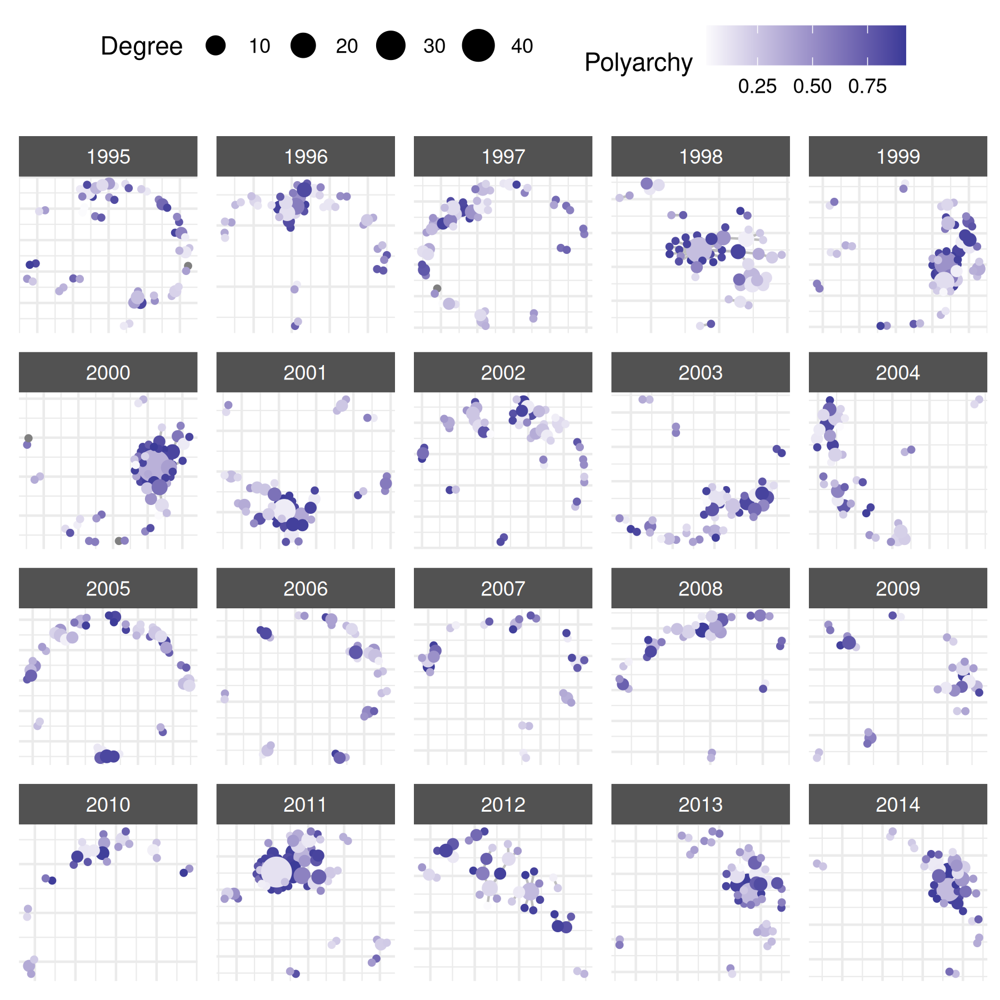
We might also prefer to add labels, but only a select few:
library(countrycode)
cowns = countrycode(
c(
'United States', 'China', 'Russia',
'France', 'Germany', 'United Kingdom'),
'country.name', 'cown'
)
cabbs = countrycode(cowns, 'cown', 'iso3c')
plot(
mid_long_network,
edge_color='grey',
point_size_var='degree',
point_color_var='v2x_polyarchy1',
select_text = cowns,
select_text_display = cabbs,
text_size = 3
) +
scale_color_gradient2() +
labs(
size = 'Degree',
color = 'Polyarchy'
) ## Warning: Removed 839 rows containing missing values or values outside the scale range
## (`geom_text()`).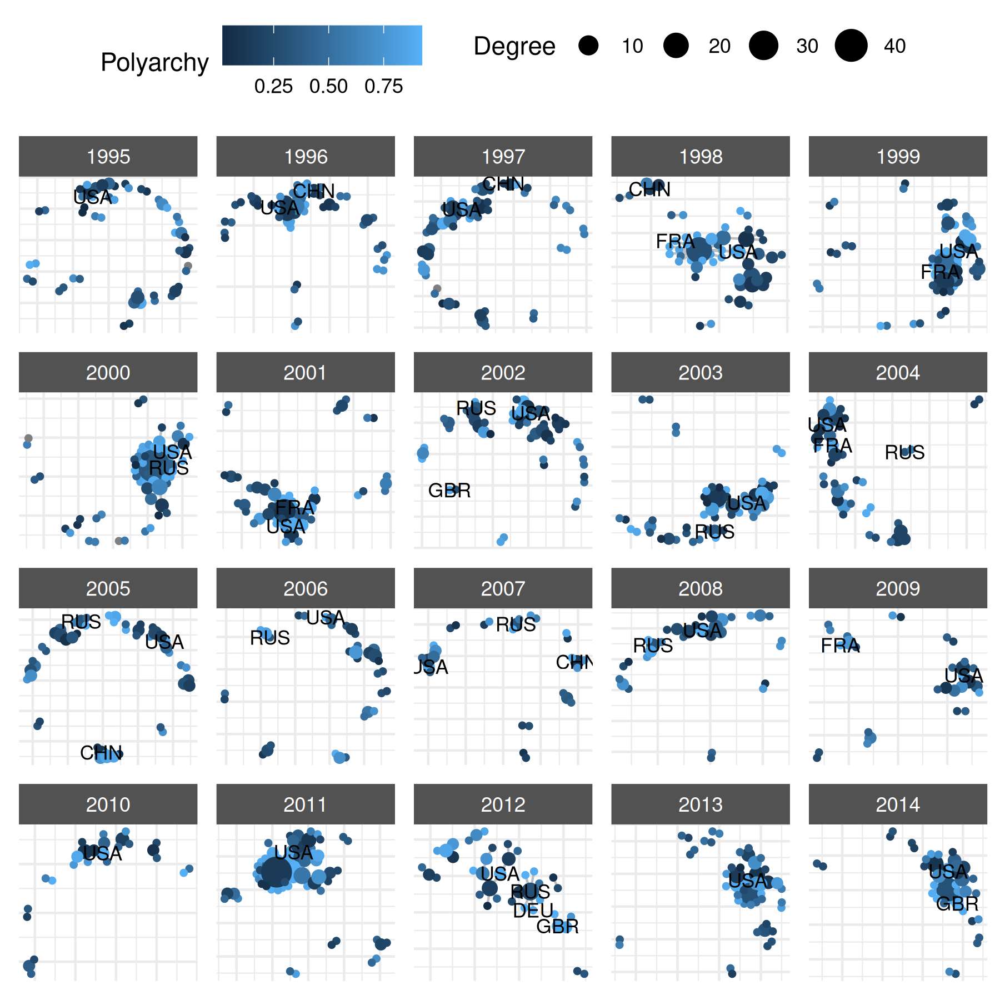
# or we can go with labels only
# and remove points
plot(
mid_long_network,
edge_color='grey',
add_points = FALSE,
add_label = TRUE,
label_size_var='degree',
label_color = 'white',
label_fill_var='v2x_polyarchy1'
) +
scale_color_gradient2() +
labs(
size = 'Degree',
color = 'Polyarchy'
)## Warning in plot(mid_long_network, edge_color = "grey", add_points = FALSE, :
## Ignoring unknown parameters: `check_overlap`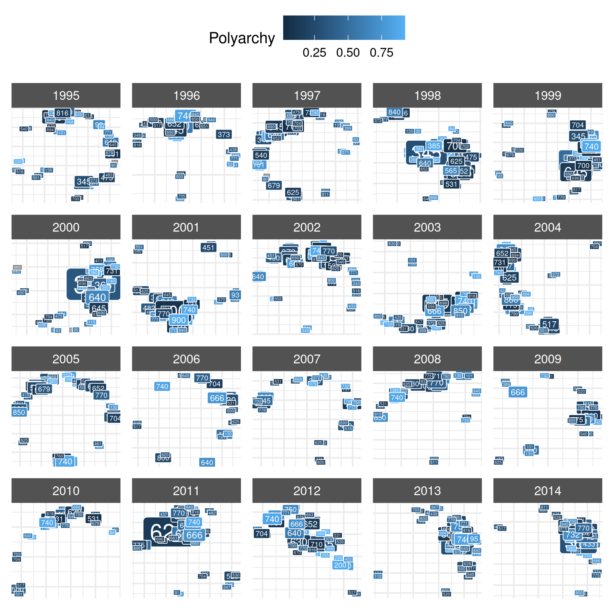
Step 3: Advance üöÄ
Once we have created and explored our network object, we might want
to continue analyzing the data using different modeling approaches.
netify makes this simple even though those models aren’t!
And for the sake of convergence lets go with cross-sectional
networks.
First, prep the data:
# prep data
cow_cross = cow_dyads |>
group_by(ccode1, ccode2) |>
summarize(
cowmidonset = ifelse(any(cowmidonset>0), 1, 0),
capdist = mean(capdist),
polity21 = mean(polity21, na.rm=TRUE),
polity22 = mean(polity22, na.rm=TRUE),
wbgdp2011est1 = mean(wbgdp2011est1, na.rm=TRUE),
wbgdp2011est2 = mean(wbgdp2011est2, na.rm=TRUE),
wbpopest1 = mean(wbpopest1, na.rm=TRUE),
wbpopest2 = mean(wbpopest2, na.rm=TRUE)
) |>
ungroup() |>
mutate(
capdist = log(capdist+1)
)
# subset set to actors with 10mil pop
actor_to_keep = cow_cross |>
select(ccode1, wbpopest1) |>
filter(wbpopest1>log(10000000)) |>
distinct(ccode1)
# filter cow_cross by actor_to_keep
cow_cross = cow_cross |>
filter(ccode1 %in% actor_to_keep$ccode1) |>
filter(ccode2 %in% actor_to_keep$ccode1)
# create netlet
mid_cross_network <- netify(
cow_cross,
actor1='ccode1', actor2='ccode2',
weight='cowmidonset',
sum_dyads=FALSE, symmetric=TRUE,
diag_to_NA=TRUE, missing_to_zero=FALSE,
nodal_vars = c(
'polity21', 'polity22', 'wbgdp2011est1',
'wbgdp2011est2', 'wbpopest1', 'wbpopest2'),
dyad_vars = c('capdist'),
dyad_vars_symmetric = c(TRUE)
)Next, let’s take a look at passing our netify object to the
amen function:
# install (if necessary) and load amen
if(!'amen' %in% rownames(installed.packages())){
install.packages('amen', repos='https://cloud.r-project.org') }
library(amen)
# prep for amen
mid_cross_amen <- prep_for_amen(mid_cross_network)
# we got all the elements we need for amen! woohoO!
str(mid_cross_amen)## List of 4
## $ Y : num [1:81, 1:81] NA 1 1 0 0 0 0 0 0 0 ...
## ..- attr(*, "dimnames")=List of 2
## .. ..$ : chr [1:81] "100" "101" "130" "135" ...
## .. ..$ : chr [1:81] "100" "101" "130" "135" ...
## $ Xdyad: num [1:81, 1:81, 1] NA 6.93 6.6 7.54 7.96 ...
## ..- attr(*, "dimnames")=List of 3
## .. ..$ : chr [1:81] "100" "101" "130" "135" ...
## .. ..$ : chr [1:81] "100" "101" "130" "135" ...
## .. ..$ : chr "capdist"
## $ Xrow : num [1:81, 1:6] 7 4.35 6.35 6.8 8 9.2 7.8 10 10 10 ...
## ..- attr(*, "dimnames")=List of 2
## .. ..$ : chr [1:81] "100" "101" "130" "135" ...
## .. ..$ : chr [1:6] "polity21" "polity22" "wbgdp2011est1" "wbgdp2011est2" ...
## $ Xcol : num [1:81, 1:6] 7 4.35 6.35 6.8 8 9.2 7.8 10 10 10 ...
## ..- attr(*, "dimnames")=List of 2
## .. ..$ : chr [1:81] "100" "101" "130" "135" ...
## .. ..$ : chr [1:6] "polity21" "polity22" "wbgdp2011est1" "wbgdp2011est2" ...
# plug and run
mid_amen_mod = ame(
Y=mid_cross_amen$Y,
Xdyad=mid_cross_amen$Xdyad,
Xrow=mid_cross_amen$Xrow,
family='bin',
R=0,
symmetric=TRUE,
seed=6886,
nscan=50,
burn=10,
odens=1,
plot=FALSE,
print=FALSE
)We can apply the same process to ERGMs:
# install (if necessary) and load ergm
if(!'ergm' %in% rownames(installed.packages())){
install.packages('ergm', repos='https://cloud.r-project.org') }
library(ergm)## Loading required package: network##
## 'network' 1.18.2 (2023-12-04), part of the Statnet Project
## * 'news(package="network")' for changes since last version
## * 'citation("network")' for citation information
## * 'https://statnet.org' for help, support, and other information## Registered S3 methods overwritten by 'ergm':
## method from
## simulate.formula lme4
## simulate.formula_lhs lme4##
## 'ergm' 4.6.0 (2023-12-17), part of the Statnet Project
## * 'news(package="ergm")' for changes since last version
## * 'citation("ergm")' for citation information
## * 'https://statnet.org' for help, support, and other information## 'ergm' 4 is a major update that introduces some backwards-incompatible
## changes. Please type 'news(package="ergm")' for a list of major
## changes.
# called prep_for_statnet because it's a reference
# to the network library, which is what ergm uses
mid_cross_ergm = prep_for_statnet(mid_cross_network)
# attributes should all be loaded into the
# appropriate slot
# notice edge attribtues get a _e suffix added
mid_cross_ergm## Network attributes:
## vertices = 81
## directed = FALSE
## hyper = FALSE
## loops = FALSE
## multiple = FALSE
## bipartite = FALSE
## cowmidonset: 81x81 matrix
## capdist: 81x81 matrix
## total edges= 160
## missing edges= 0
## non-missing edges= 160
##
## Vertex attribute names:
## polity21 polity22 vertex.names wbgdp2011est1 wbgdp2011est2 wbpopest1 wbpopest2
##
## Edge attribute names:
## capdist_e cowmidonset
# plug and run
# Fit the ERGM model (well not a real ergm)
ergm_model <- ergm(
formula = mid_cross_ergm ~
edges +
nodecov("polity21") +
nodecov("wbgdp2011est2") +
nodecov("wbpopest2")
)## Starting maximum pseudolikelihood estimation (MPLE):## Obtaining the responsible dyads.## Evaluating the predictor and response matrix.## Maximizing the pseudolikelihood.## Finished MPLE.## Evaluating log-likelihood at the estimate.Bonus Example
A common data type used to create networks is in the structure of event data, where actors are repeated across rows but there is no specific variable that denotes the ‘edge’ as shown in our previous example.
We show how to use netify and UCDP data as just one
example of potential applications to intrastate event data. The first
step is to go to https://ucdp.uu.se/downloads/ and download the data you
want to use. For this tutorial we have downloaded UCDP GED event data
version 23.1 and subset the data for the case of Mexico.
load("ucdp_ged_mexico.rda")- Create an aggregated, weighted network of conflict between actors in Mexico.
# default to number of events
mex_network <- netify(
dyad_data = mexico,
actor1 = 'side_a',
actor2 = 'side_b',
symmetric = TRUE,
sum_dyads = TRUE,
diag_to_NA = TRUE,
missing_to_zero = TRUE
)## ! Warning: there are repeating dyads within time periods in the dataset. When `sum_dyads = TRUE` and `weight` is not supplied, edges in the outputted adjacency matrix represent a count of interactions between actors.
# A summary of the network object
summary(mex_network)## net num_actors density num_edges prop_edges_missing mean_edge_weight
## 1 1 72 0.02543036 130 0 5.608764
## sd_edge_weight median_edge_weight min_edge_weight max_edge_weight competition
## 1 89.74295 0 0 3076 0.1494919
## sd_of_actor_means transitivity
## 1 17.64839 0.1052632
# weight using a variable
mex_network_civ <- netify(
dyad_data = mexico,
actor1 = 'side_a',
actor2 = 'side_b',
weight = 'deaths_civilians',
symmetric = TRUE,
sum_dyads = TRUE,
diag_to_NA = TRUE,
missing_to_zero = TRUE
)
summary(mex_network_civ)## net num_actors density num_edges prop_edges_missing mean_edge_weight
## 1 1 72 0.01643192 84 0 0.458529
## sd_edge_weight median_edge_weight min_edge_weight max_edge_weight competition
## 1 8.631244 0 0 377 0.1655174
## sd_of_actor_means transitivity
## 1 1.52567 0.168- Explore
# select 10 random indices from 1 to the length of select_names
select_names <- rownames(mex_network)
set.seed(12345)
random_indices <- sample(length(select_names), 10)
# select 10 random names using the random indices
random_names <- select_names[random_indices]
plot(mex_network,
add_text = TRUE)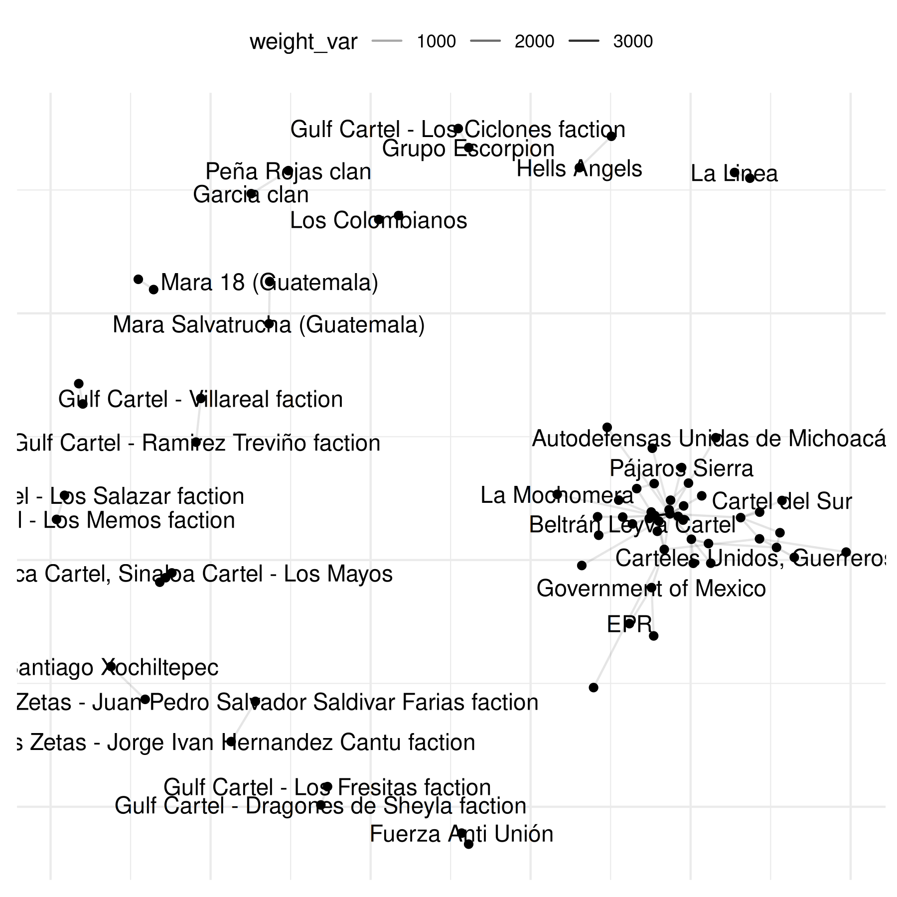
plot(mex_network,
select_text = random_names,
select_text_display = random_names)## Warning: Removed 62 rows containing missing values or values outside the scale range
## (`geom_text()`).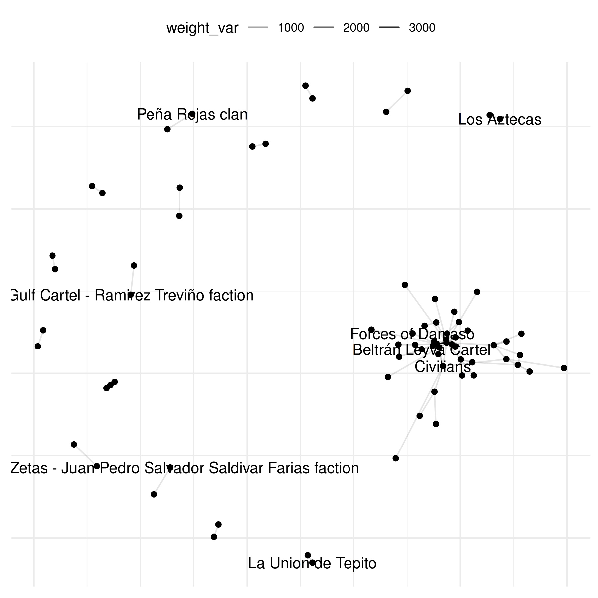
# different edges, highlight same actors, different netify object:
plot(mex_network_civ,
select_text = random_names,
select_text_display = random_names)## Warning: Removed 38 rows containing missing values or values outside the scale range
## (`geom_text()`).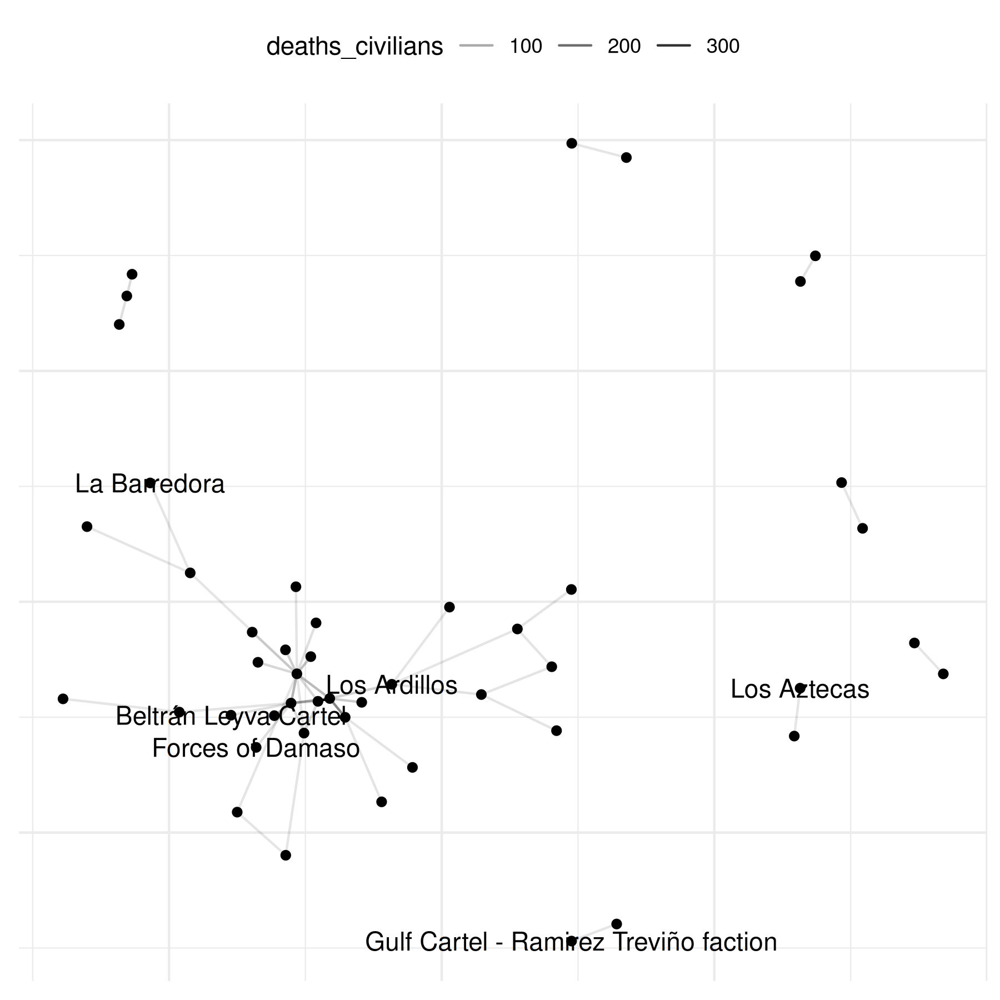
We can also apply functions from igraph:
i_opt_memb = function(x){
ig = prep_for_igraph(x)
memb = igraph::cluster_optimal(ig)$membership
return(memb)
}
# add to summary
sum_mex <- summary_actor(
mex_network,
other_stats = list(i_opt_memb=i_opt_memb))References
Csárdi G, Nepusz T, Traag V, Horvát S, Zanini F, Noom D, Müller K (2024). igraph: Network Analysis and Visualization in R. doi:10.5281/zenodo.7682609, R package version 2.0.3, https://CRAN.R-project.org/package=igraph.
Davies, Shawn, Therese Pettersson & Magnus Öberg (2023). Organized violence 1989-2022 and the return of conflicts between states?. Journal of Peace Research 60(4).
Handcock M, Hunter D, Butts C, Goodreau S, Krivitsky P, Morris M (2018). ergm: Fit, Simulate and Diagnose Exponential-Family Models for Networks. The Statnet Project (http://www.statnet.org). R package version 3.9.4, https://CRAN.R-project.org/package=ergm.
Hoff, Peter D. “Dyadic data analysis with amen.” arXiv preprint arXiv:1506.08237 (2015).
Högbladh Stina, 2023, “UCDP GED Codebook version 23.1”, Department of Peace and Conflict Research, Uppsala University
Miller S (2022). “peacesciencer: An R Package for Quantitative Peace Science Research.” Conflict Management and Peace Science, 39(6), 755–779. doi: 10.1177/07388942221077926.
Statnet Development Team (Pavel N. Krivitsky, Mark S. Handcock, David R. Hunter, Carter T. Butts, Chad Klumb, Steven M. Goodreau, and Martina Morris) (2003-2023). statnet: Software tools for the Statistical Modeling of Network Data. URL http://statnet.org
Sundberg, Ralph and Erik Melander (2013) Introducing the UCDP Georeferenced Event Dataset. Journal of Peace Research 50(4).